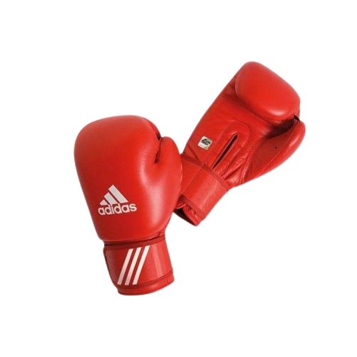
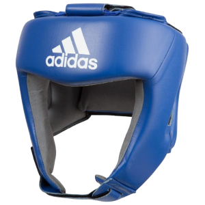

Przebieg walki
 Przy obecnych zasadach zawodnicy boksu olimpijskiego walczą w następujących dystansach: młodzicy i młodziczki (13-14 lat) 3 rundy po 1,5 minuty z minutą przerwy. Kadeci i kadetki (15-16 lat) 3 rundy po 2 minuty z minutą przerwy. Juniorzy, juniorki (17-18 lat) oraz seniorzy i seniorki (do 40 roku życia) walczą 3 rundy po 3 minuty z minutą przerwy.
Wszyscy zawodnicy zobowiązani są walczyć w rękawicach jednej z atestowanych przez międzynarodową federacje boksu IBA np. Adidas (zdjęcie po lewej). Seniorzy oraz Juniorzy w kategoriach wagowych powyżej 71kg zobowiązani są do walki w rękawicach o wadze 12oz zapewniających większe bezpieczeństwo zarówno zawodnikowi jak i jemu przeciwnikowi. Pozostałe kategorie wiekowe boksują w rękawicach o wadze 10oz.
Ponadto wszyscy zawodnicy nie będący seniorami zobowiązani są do zakładania atestowanego kasku ochronnego(zdjęcie poniżej).

Koniec walki
KO (nokaut) – kończy walkę, gdy zawodnik zostaje powalony przez rywala i wyliczony przez sędziego do dziesięciu.
TKO (nokaut techniczny) – kończy walkę, gdy jeden z zawodników nie jest w stanie fizycznie walczyć dalej. Decyzję o zakończeniu pojedynku przez TKO może podjąć sędzia ringowy (wtedy następuje tzw. RSC – referee stopped contest), lekarz przy ringu, sam zawodnik lub jego sekundant.
Werdykt sędziowski – kończy walkę, gdy zawodnicy przeboksują pełny zaplanowany dystans (lub walkę zakończy kontuzja po 3, 4 lub 5 starciu – w zależności od federacji). W boksie zawodowym sędziowie przyznają punkty za poszczególne rundy. Jeśli zawodnik wygrał rundę, dostaje w karcie punktowej 10 punktów, a rywal 9, jeśli był remis obaj dostają po 10 punktów. Sędziowie punktowi są zobowiązani do odejmowania punktów zawodnikom za każde ostrzeżenie od sędziego i każde liczenie.
U amatorów, gdy zawodnik otrzymał silny cios sędzia ma prawo wyliczyć go do ośmiu w pozycji stojącej – jest to tzw. nokdaun (w zawodowców sędzia liczy dopiero, gdy zawodnik upadnie).
Podstawowe zasady
– Nie można uderzać poniżej pasa, przytrzymywać, popychać, szarpać, kopać, pluć, gryźć;
– Nie można uderzać głową, ramieniem, łokciem;
– Nie można uderzać otwartą rękawicą, “na odlew”, przegubem;
– Nie można uderzać w plecy, tył głowy, nerki;
– Nie można zadawać ciosów opierając się na linach, wykorzystując element dźwigni;
– Nie można przytrzymywać przeciwnika przy jednoczesnym zadawaniu ciosów, oraz stosować uników w taki sposób że głowa znajduje się poniżej pasa przeciwnika;
– Kiedy sędzia przerywa klincz, należy wziąć pełen krok do tyłu. Zabronione jest wyprowadzenie natychmiastowych ciosów po rozdzieleniu;
– Nie można wypluwać ochraniacza na zęby w celu odpoczynku;
– Po zaaplikowaniu przeciwnikowi knockdownu, nalezy udać się do neutralnego narożnika i odczekać liczenie sędziego
– Nie można uderzać leżącego, podnoszącego się oponenta;
– Powalony bokser ma czas do dziesięciu sekund, aby powstać i kontynuować walkę;
– Pieściarz, który dostał cios poniżej pasa ma pięć minut na dojście do siebie. W razie nie podjęcia walki po tym czasie, zostaje pokonany przez knock-out;
– W przypadku kontuzji uniemożliwiającej kontynuowanie walki, bokser który popełnił faul zostaje zdyskawlifikowany;
– Jeżeli kontuzja pozwala na kontynuowanie pojedynku, sędzia nakazuje odjęcie zawodnikowi faulującemu dwóch punktów;
Przykładowa tabela punktowania
| Runda | Sedzia 1 | Sedzia 2 | Sedzia 3 | Sedzia 4 | Sedzia 5 | Wynik rundy |
|---|---|---|---|---|---|---|
| Runda 1 | 10:9 | 10:9 | 10:9 | 10:9 | 10:9 | 5:0 |
| Runda 2 | 9:10 | 9:10 | 9:10 | 10:9 | 10:9 | 2:3 |
| Runda 3 | 9:10 | 9:10 | 9:10 | 10:9 | 10:9 | 2:3 |
| Zabrane punkty | 1:0 | 1:0 | 1:0 | 1:0 | 1:0 | ---- |
| Wynik | 27:29 | 27:29 | 27:29 | 29:27 | 29:27 | ---- |
| Winner Blue 2:3 | ||||||
Po lewej stronie widzimy przykładową kartę punktową z walki boksu olimpijskiego
Sędziowie osobno oceniali każdą z rund i punktowali je według uznania 10 do 9 na korzyść jednego z zawodników. Podczas walki zawodnik z narożnika czerwonego w wyniku nagminnie popełnianego błędu np. trzymania przeciwnika lub opuszczania głowy utracił jeden punkt co widzimy w jednym z wierszy. Po 3 rundach zostaly podsumowane wszystkie punkty a wyniki zostaly zapisane w jednym z wierszy. W przedostatnim wierszu widzimy wyniki wszystkich 5 sędziów, trzech z nich orzekło zwycięstwo zawodnika w narożniku niebieskim a dwóch w narożniku czerwonym. Podsumowując, zawodnik z narożnika niebieksiego wygrał tzw. niejednogłośną decyzją sędziów. Taki system w boksie olimpijskim funkcjonuje od doyśc niedawna, wcześcniej sędziowe punktowali na wcześniej wspomniane "maszynki".